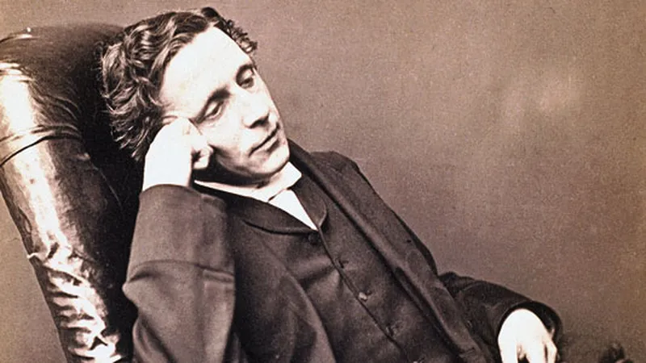

Lewis Carroll was the pen name of Charles Lutwidge Dodgson, a renowned English writer, mathematician,
logician, and photographer. He was born on January 27, 1832, in Daresbury, Cheshire, England, and passed
away on January 14, 1898, in Guildford, Surrey, England. Carroll is best known for his imaginative literary
works, particularly "Alice's Adventures in Wonderland" and its sequel, "Through the Looking-Glass."
Dodgson was the eldest son in a family of eleven children. He displayed an early aptitude for
mathematics and showed great promise in the subject. In 1851, he enrolled at Oxford University's Christ
Church, where he eventually became a mathematical lecturer and remained closely associated with the
institution for the rest of his life. It was during Dodgson's time at Oxford that he began developing the
stories that would later become "Alice's Adventures in Wonderland." In 1862, while on a boating trip with
the Liddell family, Dodgson told a tale to entertain the children, including Alice Liddell.
Encouraged by the positive reception, he later expanded the story into a manuscript, and it was
published in 1865 under the pseudonym Lewis Carroll. The book's whimsical characters, imaginative plot, and
clever wordplay made it an instant success and a beloved classic of children's literature.

Website Title
Author Info: